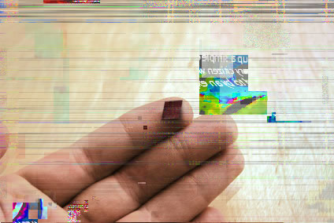
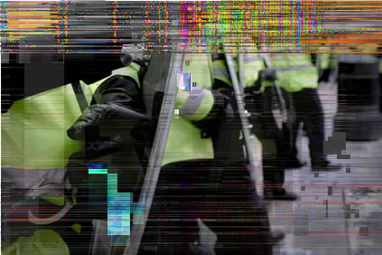

Operation Chip Sweep, known colloquially as Op Swamp 0000, was a programme plan
detain so-called ‘chip-pullers’ in the Brixton area of London.
Nerochips a
Opposition to nerochip technology was initially strong
in Great Britain. However, after a series of high-profile
crimes, notably the infamous Chelsea Incident (see
footnote 1), Parliament began to investigate
programmes for
release. Public opinion remained mixed but began to
sway in favour of a legislation that proposed importing
American nerochip technology to monitor convicts after
their release.
Three years af
passed the Scales Act (named after the MP who
wrote the legislation), which required all violent
offenders to be implanted wi
proscribed removal of the nerochip without permission
from the Courts. Prisoners’ rights and civil rights groups
protested lou
The first media explo
ex-convicts died after trying to remove their neroch
effectively slitting their own wrists. However, a number
of individuals discovered underground resources with
instructions for safely removing nerochips and performed
successful nerochip removal surgeries on themselves.
Because of the noto
Brixton, many ‘chip-pullers’ and their clients took refuge
there, hoping to av
Community Reaction
Initially residents of Brixton were divided about how to react to the influx of refugee convicts. Some locals wanted to call in the authorities,
while others vigorously opposed summoning the Metropolitan Police, believing it would only cause problems for residents. Some wanted
to employ vigilante methods to expel the chip-pullers from the area. Others advocated on behalf of the refug
claiming the nerochips represented a severe invasion of personal freedom.
In the weeks leading up to the riots, several skirmishes occurred between Brixton residents and chip-pullers. Police began patrolling Brixton
heavily, increasing resentment from residents who mistrusted police intervention. The chip-pullers found themselves effective
between irate locals and the now-watchful Metropolitan Police.
The Riot
Rumours and controversy persist regarding the
precise catalyst for the riots of January 16-17. Many
claim that the police deliberately instigated the riot or
that local agitators precipitated the viole
rocks and burning bottles at police cars.
In point of f
sweep the area for both chip-pullers and drug dealers,
but police were not scheduled to enter Brixton in force
for another fortnight. Authorities had seen the chip-
pullers as an opportunity to make extensive arrests in
Brixton whilst also having a certain amount of
community support.
On the evening of Jan 16, a pair of constables
responded to a domestic violence call. They
mistakenly entered th
firearm and threatened to shoot if the officers did not
leave immediately. One resident and one p
officer were killed and two residents severely
wounded during the ensuing shoot-out.
The incident ignited wides
force – ill-prepared and now violently opposed by
locals – was brought in during the night to quell protests, which quickly turned to rioting. Chi
Several buildings and vehicles were destroyed during the riots, which lasted well into the following day.
Footnotes:
1. During the 2018 World Cup, held in England, drunken football fans in Chelsea abducted an Argentinean family, molested the daughters and beat
the parents to death. Panicking, they tied the girls together and push
surveillance video and then ma
Operation Chip Sweep
Operation Chip Sweep, known colloquially as Op Swamp 0000, was a programme planned by the Metropolitan police to capture and
detain so-called ‘chip-pullers’ in the Brixton area of London.
Nerochips and ‘Chip-pullers’
Opposition to nerochip technology was initially strong
in Great Britain. However, after a series of high-profile
crimes, notably the infamous Chelsea Incident (see
footnote 1), Parliament began to investigate
programmes for better monitoring convicts after their
release. Public opinion remained mixed but began to
sway in favour of a legislation that proposed importing
American nerochip technology to monitor convicts after
their release.
Three years after the Chelsea Incident, Parliament
passed the Scales Act (named after the MP who
wrote the legislation), which required all violent
offenders to be implanted with a nerochip, and
proscribed removal of the nerochip without permission
from the Courts. Prisoners’ rights and civil rights groups
protested loudly but to no avail.
The first media explosion came when a series of
ex-convicts died after trying to remove their nerochips,
effectively slitting their own wrists. However, a number
of individuals discovered underground resources with
instructions for safely removing nerochips and performed
successful nerochip removal surgeries on themselves.
Because of the notorious reluctance of police to enter
Brixton, many ‘chip-pullers’ and their clients took refuge
there, hoping to avoid police attention.
Community Reaction
Initially residents of Brixton were divided about how to react to the influx of refugee convicts. Some locals wanted to call in the authorities,
while others vigorously opposed summoning the Metropolitan Police, believing it would only cause problems for residents. Some wanted
to employ vigilante methods to expel the chip-pullers from the area. Others advocated on behalf of the refugees on political grounds,
claiming the nerochips represented a severe invasion of personal freedom.
In the weeks leading up to the riots, several skirmishes occurred between Brixton residents and chip-pullers. Police began patrolling Brixton
heavily, increasing resentment from residents who mistrusted police intervention. The chip-pullers found themselves effectively trapped
between irate locals and the now-watchful Metropolitan Police.
The Riot
Rumours and controversy persist regarding the
precise catalyst for the riots of January 16-17. Many
claim that the police deliberately instigated the riot or
that local agitators precipitated the violence by hurling
rocks and burning bottles at police cars.
In point of fact, the task force was indeed preparing to
sweep the area for both chip-pullers and drug dealers,
but police were not scheduled to enter Brixton in force
for another fortnight. Authorities had seen the chip-
pullers as an opportunity to make extensive arrests in
Brixton whilst also having a certain amount of
community support.
On the evening of Jan 16, a pair of constables
responded to a domestic violence call. They
mistakenly entered the wrong flat; the resident drew a
firearm and threatened to shoot if the officers did not
leave immediately. One resident and one police
officer were killed and two residents severely
wounded during the ensuing shoot-out.
The incident ignited widespread violence. The task
force – ill-prepared and now violently opposed by
locals – was brought in during the night to quell protests, which quickly turned to rioting. Chip-pullers had become the least of their worries.
Several buildings and vehicles were destroyed during the riots, which lasted well into the following day.
Footnotes:
1. During the 2018 World Cup, held in England, drunken football fans in Chelsea abducted an Argentinean family, molested the daughters and beat
the parents to death. Panicking, they tied the girls together and pushed them into the river under Chelsea Bridge, a moment initially captured by
surveillance video and then made public by several tabloid newspapers. Two of the three men involved had prior convictions.


24.20.2